27 stories shipped 10–11 June 2026. Batch 1 covers the audit fixes (#68–#88, branch ralph/audit-fixes), batch 2 the sync hardening work (#89–#94, branch ralph/sync-hardening). Walk this page top to bottom; each entry tells you exactly how to confirm the fix.
How to use this page. Each entry names the commit, the ToDoozy task (short id, find it via search), what changed in plain language, and one verification path: before/after screenshots, a numbered repro, or a test scenario for the invisible sync and MCP work.
When a fix checks out, click Accepted on the entry (saved locally in this browser) and move the matching ToDoozy task from Verifying to Done. The sidebar tracks your progress.
Deploy before testing
Four entries cannot be verified until you deploy. Run these once, before walking the list:
supabase functions deploy mcp # stories #88 and #93
supabase functions deploy remove-password # story #94
supabase db push # story #91 Realtime migration
# (20260610230000_realtime_user_channel.sql)
Everything else is verifiable in the app as built from this branch.
#68Remove "AI-native" from the public product description
improvementcommit 36b0240task 9838a89a
The marketing phrase "AI-native task manager" was removed from every public-facing string: the package.json description, the README opening line, and the CLAUDE.md project intro. The one mention left in REBUILD_SPEC.md stays on purpose, since there it describes the built-in MCP server as a design principle rather than a tagline.
Verification · quick check
Open package.json and the README on this branch.
Before: both led with "AI-native task manager". Now: the phrase is gone from both, and from CLAUDE.md's intro.
#69Scrolling over a number input no longer changes the value
fixcommit 69a6d57task 381660b5
All seven numeric fields in the app (five in Timer settings, the auto-archive value, and the start-dialog reps field) used to react to the scroll wheel: scrolling the page while the cursor happened to sit over one would silently increment or decrement it. Each input now drops focus the moment a wheel event hits it, so the page scrolls and the value stays put.
Verification · repro
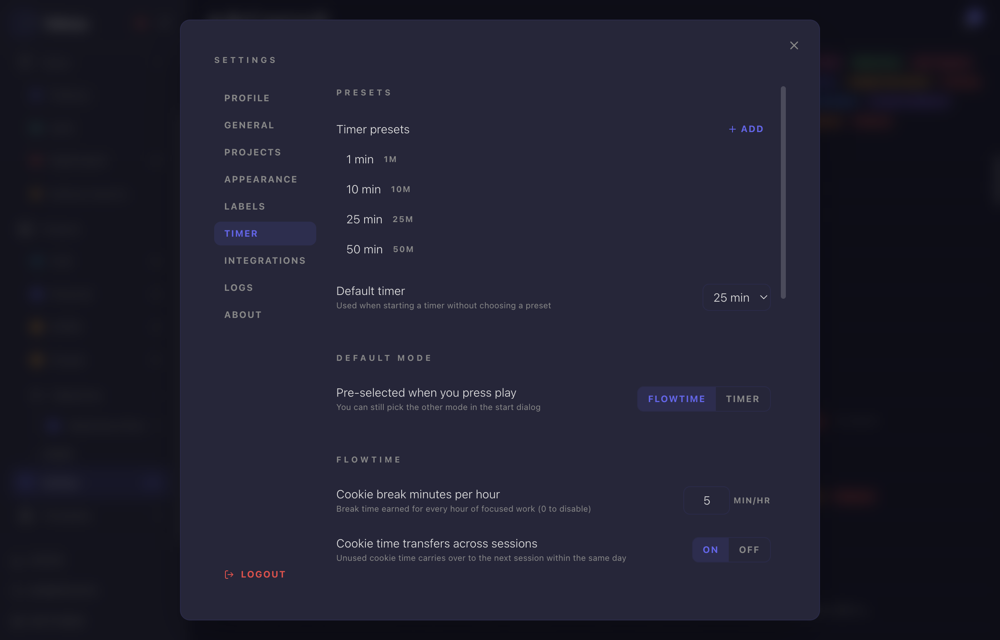
After · Settings → Timer, one of the seven protected inputs
Open Settings → Timer and put the cursor over "Cookie break minutes per hour".
Scroll the wheel or trackpad.
Before: the value crept up or down. Now: the value never changes; the input just deselects and the page scrolls normally.
#70Auto-archive value can be cleared while typing
fixcommit 4060199task 7c8aefa0
The auto-archive duration field in Settings → Projects → Archive committed every keystroke straight to the store, and an empty field instantly snapped back to a default. You literally could not delete the last digit to type a new number; the only workaround was select-all and overwrite. The field now keeps what you type locally while editing and only validates (clamping to 1–999) when you leave it.
Verification · repro
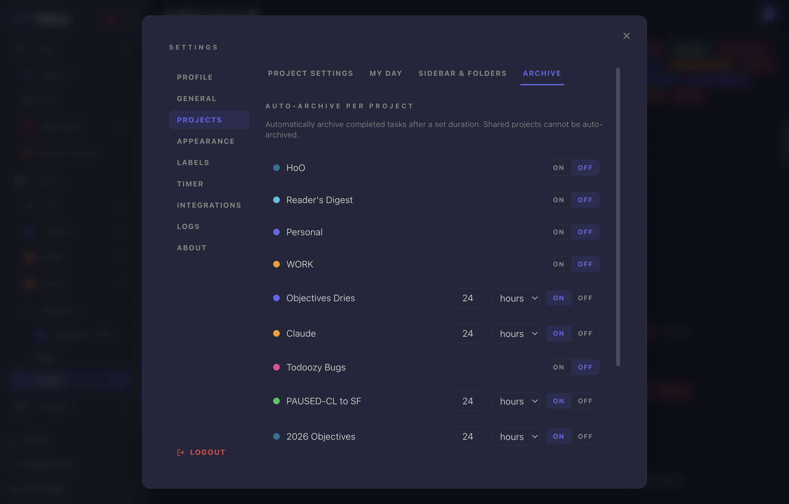
After · Settings → Projects → Archive
Open Settings → Projects → Archive and enable auto-archive on a project.
Click into the duration value and press Backspace until it is empty.
Before: the field refused to empty, snapping back to a number after each delete. Now: it empties normally; type a new value, and on blur an empty or invalid value clamps to 1.
#71"Check your email" sign-up message is green, not red
fixcommit 16e481atask b0aef29d
After signing up, the "Check your email for a confirmation link." notice rendered through the error banner, so a success state looked like a failure. The auth store now carries an informational message separate from errors, and the login screen renders it in the green success style. Real sign-up errors still come through red.
Verification · before / after
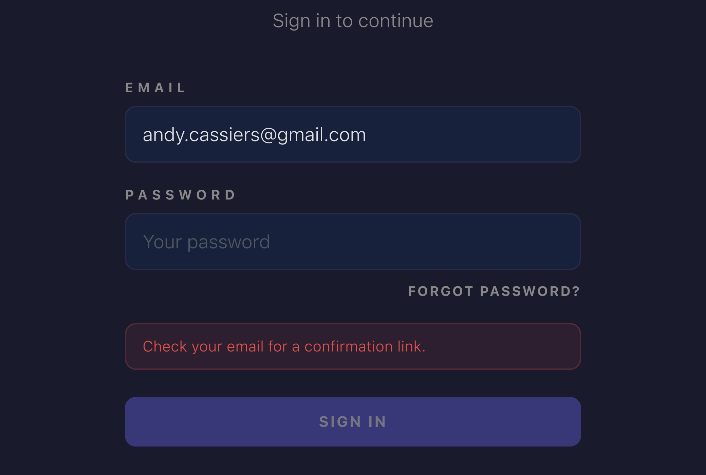
Before · success message styled as an error
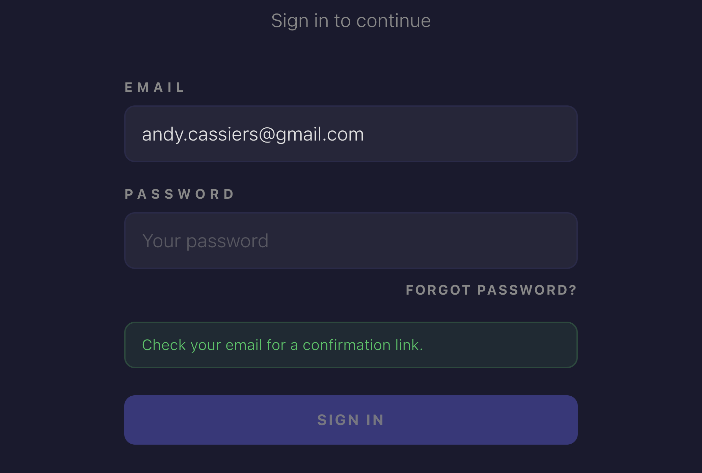
After · same message in the success style
Captured from the real login screen at the pre-fix commit and at HEAD. The message state was injected directly into the auth store rather than performing a live sign-up, so no test account was created; the banner component and styling are exactly what a real sign-up renders.
To verify live: sign out, switch to Sign up, and register any new address.
Before: the confirmation notice appeared in red. Now: green, with red reserved for actual errors.
#72Clicking "Less" actually collapses the projects list
fixcommit 98fd5dftask 493d85fd
With a project selected beyond the first five, clicking "Less" appeared dead: an auto-expand effect watched its own output and immediately re-expanded the list. The effect now only fires on navigation, so the manual toggle wins and the list stays collapsed.
Verification · repro
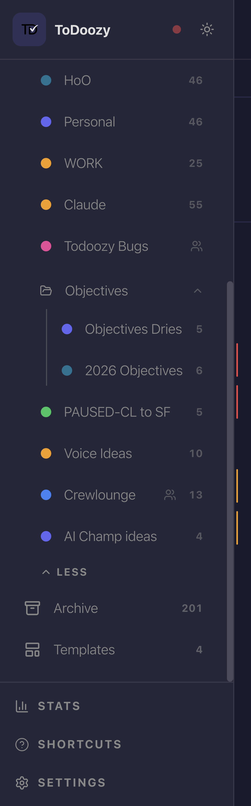
After · expanded list with the Less control
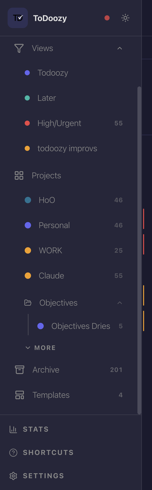
After · one click on Less collapses back to five
Click "More" in the sidebar, then select a project that sits below the fifth position.
Click "Less".
Before: nothing happened (the list re-expanded instantly). Now: the list collapses to five and stays collapsed.
#73New projects pre-select the next unused color
improvementcommit 1de93e4task 3de51a1f
Both project creation flows (the modal and the inline sidebar form) always pre-selected the first palette color, indigo, even when an existing project already used it. They now suggest the first palette color not yet taken by any of your projects, and cycle deterministically once all eight are in use.
Verification · before / after
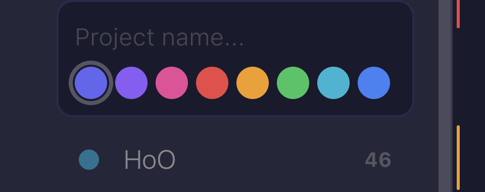
Before · indigo pre-selected although Personal already uses it
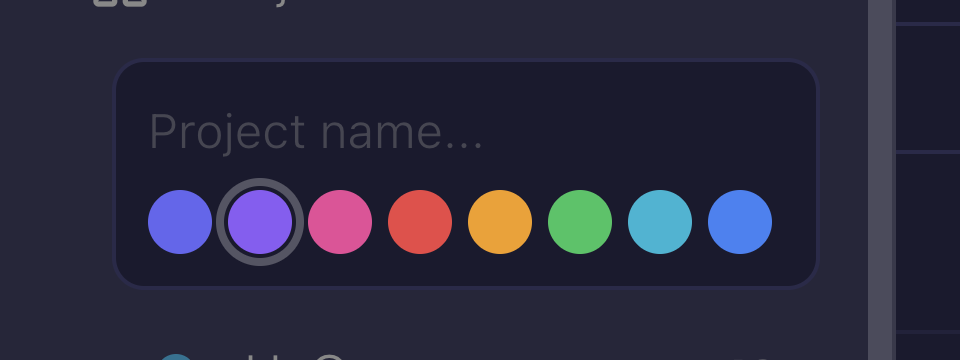
After · the next unused color (violet) is pre-selected
Click the new-project button in the sidebar.
Before: the first swatch was always ringed. Now: the ring sits on the first color none of your projects use.
#74Shared projects stay visible in the sidebar (local order preserved)
fixcommit 8a3d988task 6b762989
Every sync pass overwrote your local sidebar ordering with the project owner's, and newly discovered shared projects were created at position zero. Both together pushed shared projects behind the "More" fold even when you had placed them higher. Sidebar order is now treated as a per-device preference that sync never clobbers, and a newly discovered shared project appends after your own projects instead of hiding.
Verification · sync scenario
In the sidebar, drag a shared project (for example Todoozy Bugs or Crewlounge) into the top five.
Have the project owner (or a second account in another window) reorder or rename their own projects, or just wait for the next sync pass and restart the app.
Before: your shared project would drop back below the fold after the owner's order synced over yours. Now: it stays exactly where you put it; only a brand-new shared membership appears at the end of your list.
#75Dismissing the date chip really removes the date
fixcommit 437b6aatask c18e314c
Typing "call mom tomorrow" in quick add shows a date chip. Clicking the chip's ✕ was supposed to keep the task date-free, but submit re-parsed the text anyway: the task got the due date and "tomorrow" was stripped from the title. The dismissal is now honored at submit time, so the full title is kept and no date is applied.
Verification · repro
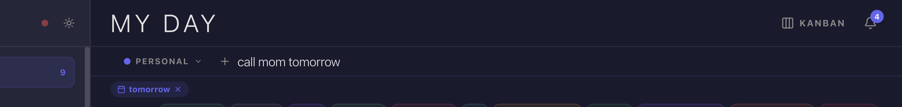
After · the chip with its dismiss control
Type call mom tomorrow in any quick-add input; the "tomorrow" chip appears.
Click the ✕ on the chip, then press Enter.
Before: the task was created with tomorrow's due date and the title shortened to "call mom". Now: no due date, and the title stays "call mom tomorrow".
#76Bare tokens like "121s" no longer set a due date
fixcommit 613d994task 7a6830d9
The natural-language date parser read bare duration abbreviations ("121s", "5m", "3d", "2w") inside task titles as "that long from now" and set a due date. Those single tokens are now rejected. Deliberate phrasing still works: "in 5m" or "tomorrow" parse exactly as before, and clock times like "3pm" are unaffected.
Verification · repro
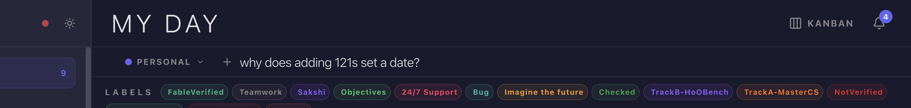
After · "121s" in the title produces no date chip
Type why does adding 121s set a date? in quick add.
Before: a date chip appeared and submit set a due date 121 seconds out. Now: no chip, no date.
Counter-check: type in 5m; the chip still appears, as intended.
#77Labels created inside a project now sync their project link
fixcommit bb0349dtask ccca14d1
Creating a label from inside a project linked it locally but never pushed the project link to Supabase. On your other devices the label existed globally yet was missing from the project's filter bar and label picker. The link (the project_labels junction row) is now pushed together with the label.
Verification · sync scenario
Inside any project, open the label picker on a task and create a brand-new label from there.
On a second device (or after a fresh sign-in elsewhere), open the same project.
Before: the label existed in Settings → Labels but was absent from this project's filter bar and picker. Now: it appears in both, linked to the project.
Direct check, if you prefer SQL: the Supabase project_labels table has a row pairing the new label id with the project id.
#78Context-menu Start Timer honours the Flowtime default
fixcommit 1096bcctask 1a17c4fc
With Settings → Timer → Default mode set to Flowtime, the task row's play button started a flow session but the right-click Start Timer menu still started a fixed countdown. Both paths now build their timer parameters through one shared helper, and the flyout offers "Start Flowtime · Count up" when Flowtime is the default.
Verification · repro
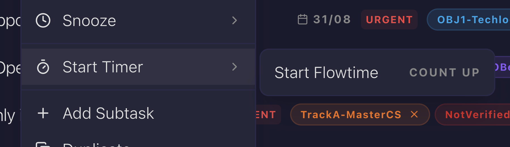
After · the flyout in Flowtime mode
Ensure Settings → Timer → "Pre-selected when you press play" is Flowtime.
Right-click any task and hover Start Timer.
Before: the flyout showed minute presets and started a countdown. Now: it shows "Start Flowtime · Count up", and starting it counts up with the cookie-break pool active.
#79Tray My Day menu shows priority-colored dots
featurecommit d0818b1task 4c9e9266
The macOS tray's My Day menu listed tasks as plain text, so urgent items did not stand out. Each task now carries a small colored dot matching its priority, using the same colors as the in-app priority indicator: green for low, blue for medium, amber for high, red for urgent. Tasks without a priority show no dot.
Verification · repro
Low
Medium
High
Urgent
Fallback: the native menu cannot be screen-captured programmatically (synthetic clicks do not open Electron tray menus), so shown above are the actual icon assets the menu renders, extracted from the build. Verify the real thing in one click below.
Give a few My Day tasks different priorities.
Left-click the ToDoozy icon in the macOS menu bar.
Before: plain text entries. Now: each prioritized task has its colored dot; unprioritized tasks have none.
#80Done sections sort by completion date, plus a "Completed" sort option
featurecommit 37133c0task f0f90144
Completed tasks used to keep their manual order, burying the most recently finished work. Under custom sort, Done sections now auto-sort newest-completed first. A "Completed" field was also added to the sort menu so any view can sort by completion date explicitly; an explicit sort always wins over the automatic one.
Verification · repro
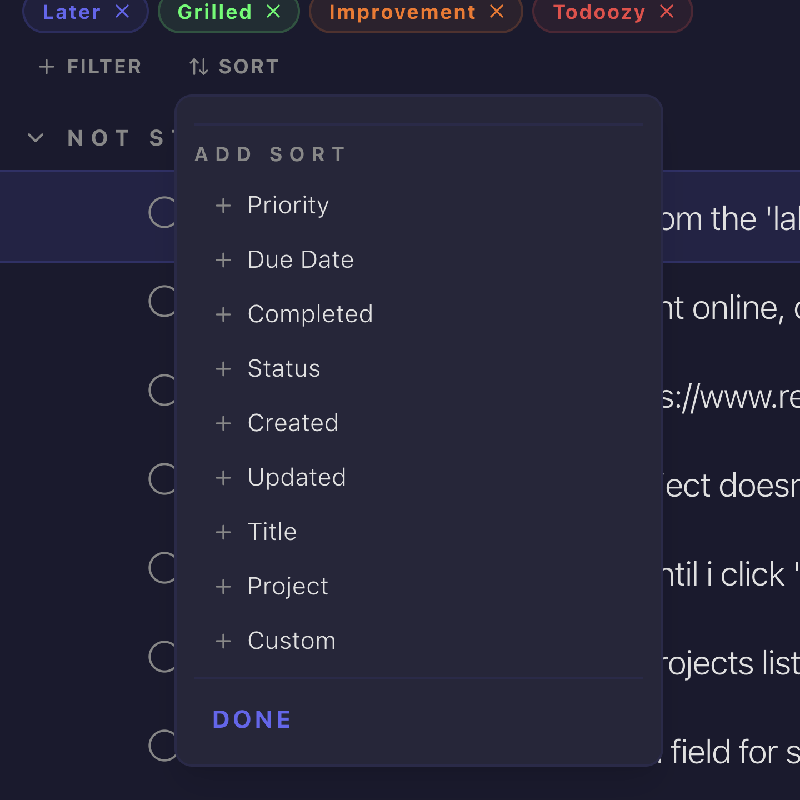
After · "Completed" in the add-sort menu
Open a project with several completed tasks while in custom (manual) sort.
Before: the Done section kept manual order. Now: most recently completed tasks are on top.
Open Sort in the filter bar: "Completed" is available as an explicit field and overrides the automatic ordering when chosen.
#81"Go to task" scrolls the task into view
fixcommit 30b276ctask b1f620ae
Following "Go to task" from the recurring-task toast, the tray, or a notification selected the task but left the list scrolled wherever it was, so the highlighted row could sit off-screen. Navigation now records the target task, and the destination view scrolls it into view once rendered, in both project views and My Day.
Verification · repro (no screenshot: a still image cannot show scrolling)
Pick a project long enough to scroll and complete a recurring task near the bottom, or trigger any task notification.
Click "Go to task" on the toast (or the task entry in the tray menu).
Before: the view opened with the selection off-screen; you had to scroll to find it. Now: the list scrolls until the selected row is visible.
#82"Go to Task" available in Saved Views
featurecommit b3744d1task f1f6a8cb
The right-click "Go to Task" action existed only in My Day. Saved Views aggregate tasks from many projects, where jumping to a task's home project is just as useful, so the action now appears there too. It navigates to the project, selects the task, and scrolls it into view using the mechanism from #81.
Verification · repro
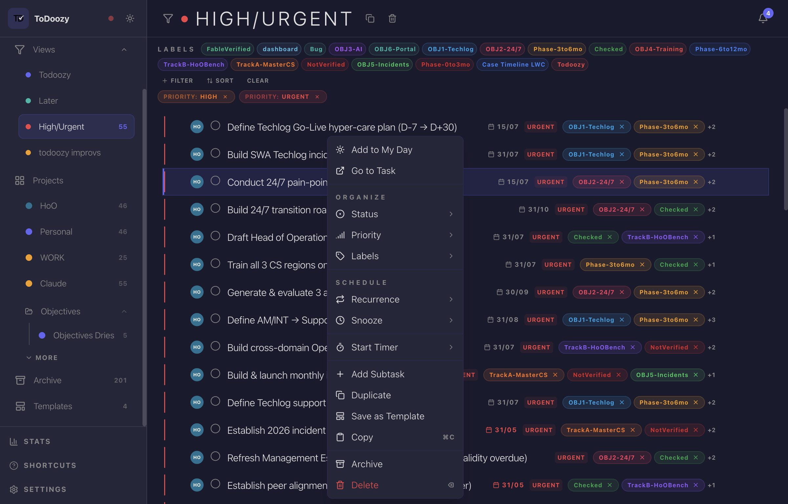
After · context menu inside the High/Urgent saved view
Open any saved view and right-click a task.
Before: no "Go to Task" entry. Now: it is the second item; clicking it lands you in the task's project with the row selected and visible.
#83Context menu regrouped by action, with section labels
improvementcommit 1410ec2task 856d3d46
The task context menu had grown into a flat list with no logic to its order. It is now grouped by what you are doing: navigation on top, an Organize section (Status, Priority, Labels), a Schedule section (Recurrence, Snooze), the timer, then creation actions, with Archive and Delete isolated at the bottom. The unused Focus submenu was removed, and the bulk-selection menu received the same treatment.
Verification · before / after
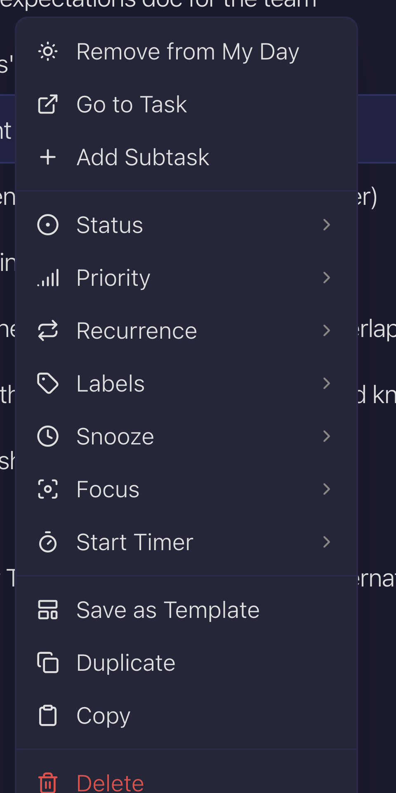
Before · flat list, Focus submenu still present
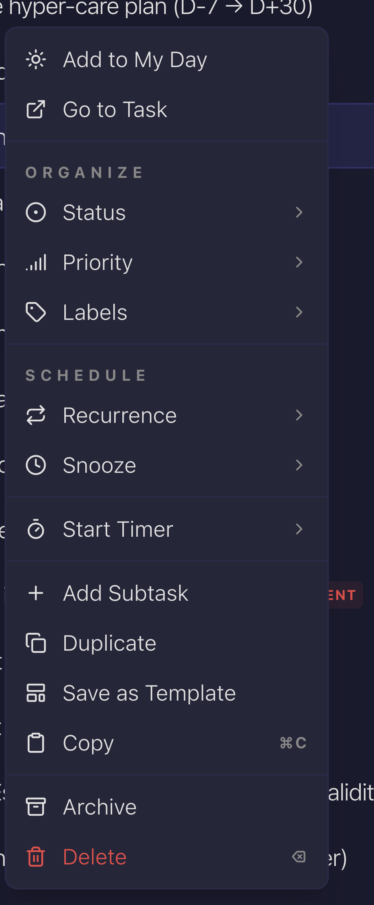
After · Organize and Schedule sections, danger zone at the bottom
Right-click any task and compare against the after shot; spot-check the bulk menu by selecting several tasks first.
#84Saved Views show the labels of their tasks as filter chips
featurecommit 8fb9c00task 8b6b6b3d
A saved view now lists, directly above its tasks, every label currently present on those tasks. Click a chip to narrow the view to that label without editing the saved filter. Same-named labels from different projects are de-duplicated into one chip.
Verification · repro
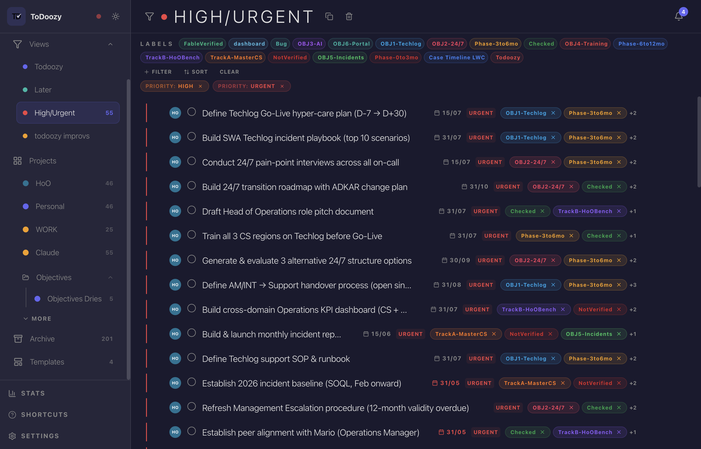
After · the High/Urgent view listing the labels in use
Open a saved view whose tasks carry labels.
Before: no label row; narrowing required editing the view filter. Now: the LABELS row shows exactly the labels in the view; clicking one filters the list, clicking again clears it.
#85Saved view counts and open views update live
fixcommit a82ab62task 62df0d2c
Sidebar counts next to saved views were computed once at startup, so a task that started matching a view (new label, raised priority) changed nothing until restart. Counts now recompute, debounced, after every task mutation, remote arrival, and MCP write. A counting bug was also fixed where label-based views always counted zero, and views now match tasks from projects you have never opened.
Verification · scenario
Note the sidebar count on a label-based saved view (for example a "Bug" view).
From any project, add that label to a task that did not have it.
Before: the count stayed stale until app restart. Now: it ticks up within about a second; removing the label ticks it back down.
Cross-project check: create a task with the label in a project you have not opened this session; the count still updates and the task appears when you open the view.
#86Archive gains filters and full row details
featurecommit 169f82btask d6e06073
The archive was a bare list of titles with completion dates, with no way to search 200+ archived tasks. It now mounts the same filter bar as regular views (labels, priority, project, due date, keyword) and each row shows its priority, label chips, and due date. Clicking a label chip filters by it; group headers and keyboard navigation follow the filtered result.
Verification · before / after
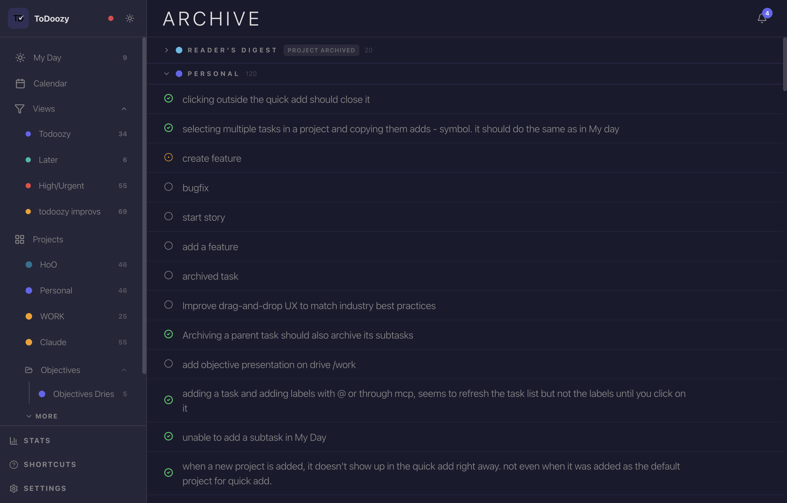
Before · titles only, no filtering
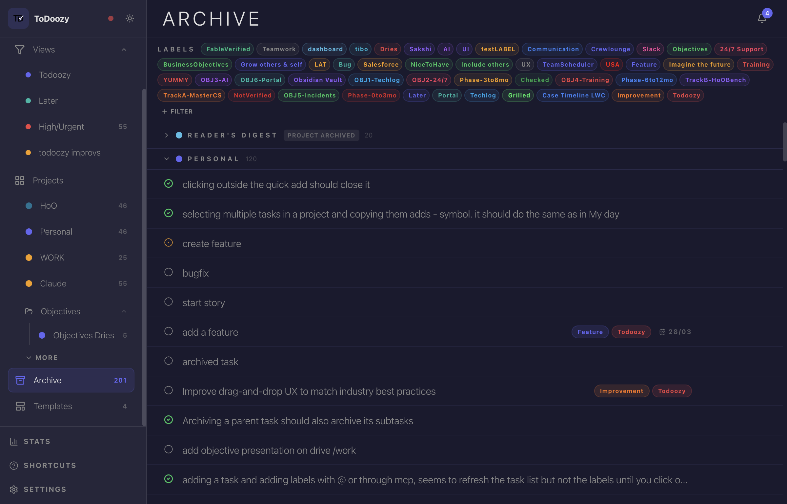
After · filter bar on top, metadata on rows
Open Archive, expand a project group, and confirm rows show priority, labels, and dates where present.
Use +Filter or a label chip to narrow; the group counts and empty state should follow the filter.
#87MCP writes and the activity feed: resolved as already covered
fixcommit 5ef4a2dtask 07a1f88a
The reported gap (tasks created through MCP produce no activity entries) targeted the old local MCP server, which had already been deleted in favor of the remote Edge Function, and that function was verified to log activity for every write tool it exposes. No code change was needed; the story is closed with that verification on record. Activity rows reaching your desktop live for personal projects is the part that was actually missing, and that shipped separately as story #91.
Verification · scenario (after deploying the #91 migration)
Ask Claude (via the ToDoozy MCP) to create a task in a personal project, then set its priority.
Open the task's detail panel in the app and check the activity feed.
Before: nothing appeared for MCP writes. Now: creation and the priority change are listed, arriving live with #91 in place.
#88MCP label tools fail loudly instead of faking success
fixcommit aa8e49dtask 41183299
The MCP tools for assigning and removing labels reported success without checking whether the database write actually landed, so a rejected write (bad id, permission issue) silently dropped data. Both now verify the write and raise a real error when it did not stick; the assign tool re-reads the task's labels after writing to catch silent permission rejections.
Deploy before testing
supabase functions deploy mcp
The fix lives in the MCP Edge Function; until deployed, production still runs the old silent behavior.
Verification · MCP scenario
Via MCP, call assign_label_to_task with a valid task id but a made-up label id (any random UUID).
Before: the call returned assigned: true and nothing happened. Now: it returns an explicit error ("Failed to assign label").
Happy path: assign a real label, confirm it appears on the task in the app; remove it, confirm removed: true and it disappears.
#89Token refresh storm no longer logs you out
fixcommit fb4b2c8task b1ee3217
After long sessions with several projects open, two refresh paths could race on the same refresh token; Supabase treats a reused token as theft and kills the whole session, silently logging you out. The last unguarded refresh call now goes through the same mutex as every other session write. And when a token does die mid-session, the banner flips to "Session expired" immediately instead of after a restart.
Verification · observational scenario (the race was probabilistic)
Keep the app running 60+ minutes with 5 or more projects, toggling Wi-Fi off and on once or twice mid-session.
Watch Settings → Logs. Before: the signature was "Session restore attempt 1/1 failed: refresh_token_already_used" followed by "token permanently dead", then a forced sign-in. Now: refreshes serialize (you may see "setAuth deduped" entries, which are normal) and no refresh_token_already_used appears.
Banner check: if a token ever does die permanently, the red "Session expired" banner now appears at that moment, without restarting the app.
#90Manual Retry works after starting offline, and Realtime comes back
fixcommit df2f6cdtask 1827d14e
Starting ToDoozy without a connection put it in offline mode, but after the network returned, the banner's "Retry now" button ignored the successful reconnect: the app stayed "offline" until restart, and live sync never resumed. Retry now acts on its result, and a successful recovery (manual or from the automatic 30-second timer) re-runs the full sync setup, Realtime subscriptions included.
Verification · repro
Disconnect Wi-Fi, quit and relaunch ToDoozy; the offline banner appears.
Reconnect Wi-Fi, then click "Retry now" on the banner.
Before: the banner stayed up and changes from other devices never arrived. Now: the banner clears within a moment and Settings → Logs shows Realtime channels re-subscribing.
Live check: make a change on a second device or via MCP; it appears without restarting.
#91Wider Realtime coverage: per-user channel, live activity, live labels
featurecommit a8d83c1task 4c89a910
Several things only synced on restart or reconcile: being added to or removed from a shared project, label and saved-view changes from other devices, activity entries on personal projects, and label assignments made through MCP. A new per-user Realtime channel now carries membership and user-scoped data live, personal project channels stream activity entries, and any task event triggers a targeted pull of that task's labels. A polling safety net sweeps activity on reconcile for both personal and shared projects.
Deploy before testing
supabase db push # applies 20260610230000_realtime_user_channel.sql
The migration adds three user-scoped tables to the Realtime publication plus the supporting indexes. Without it, the new user channel subscribes successfully but receives nothing.
Verification · two-window scenario
Membership: from a second account (or the owner), add your account to a shared project. Before: it appeared only after restart. Now: the project shows up in your sidebar within seconds; removal takes it away live too.
Activity: with a personal project's task open in the detail panel, change its priority via MCP. The activity feed gains the entry live.
Labels via MCP: call assign_label_to_task on a task you have visible. Before: the chip appeared only after clicking around or restarting. Now: it pops in on its own.
#92Detail-panel edits sync in batches, not per keystroke
featurecommit b73f86btask d174ec02
Editing a task in the detail panel used to push every saved change to Supabase as it happened, generating a stream of small writes. Edits to an open task are now buffered and pushed once at a natural boundary: switching tasks, closing the panel, the app losing focus, or quitting (with a 30-second safety timer as backstop). Completing, archiving, and My Day changes still push immediately, carrying any buffered edits with them.
Verification · two-window scenario
Open the same shared project in two windows (second account or second device).
In window one, open a task's detail panel and make several quick edits: retitle, change priority, add a label.
Before: each edit appeared in window two within a couple of seconds. Now: window two stays unchanged while you keep editing, then receives everything at once when you switch tasks, close the panel, or click away from the app.
Safety check: quit the app immediately after an edit; relaunch and confirm the edit reached the other window anyway.
#93MCP create_label writes the real project link
fixcommit 309040btask 2d4282aa
Labels created through MCP with a project were linked using a legacy storage column the app stopped reading in v1.7.0, so the label existed but was invisible inside the project. The MCP server now writes the same junction table the app uses, reads project labels from it, and the legacy column is gone from the function entirely. A failed link now errors instead of pretending success, matching #88's contract.
Deploy before testing
supabase functions deploy mcp
Same function as #88, one deploy covers both. Afterwards, a one-time backfill of any label links stranded in the legacy column remains on your list (fix plan step 5 in the task).
Verification · MCP scenario
Via MCP, call create_label with a name and a project_id.
Before: the label landed in Settings → Labels but never showed inside the project. Now: it appears in that project's filter bar and label picker (live with #91 deployed, otherwise after a reconcile).
Direct check: the Supabase project_labels table has the junction row; the project's label_data column stays untouched.
#94OAuth users can remove their password login again
featurecommit 1776432task 6a8adf77
A Google account that added a password (story #65) had no way back to Google-only sign-in; clearing a password requires admin rights no client has. A new remove-password Edge Function does it server-side, and Settings → Profile → Password shows a Remove section, with a confirmation step, only when you genuinely have both sign-in methods. It never offers to remove your only way in, and it clears the saved Keychain credentials so nothing stale lingers.
Deploy before testing
supabase functions deploy remove-password
The button calls this function; without the deploy it fails with a not-found error.
Verification · auth scenario (use your Google account, which has a password set)
Open Settings → Profile → Password. The "Remove password login" section is visible because the account has both Google and a password.
Click Remove, confirm in the toast. The section flips back to "Add Password Login" without a reload and you stay signed in.
Sign out, then try signing in with email and the old password: it must fail. "Continue with Google" works.
Round-trip: add a password again from the same screen; the Remove section reappears.